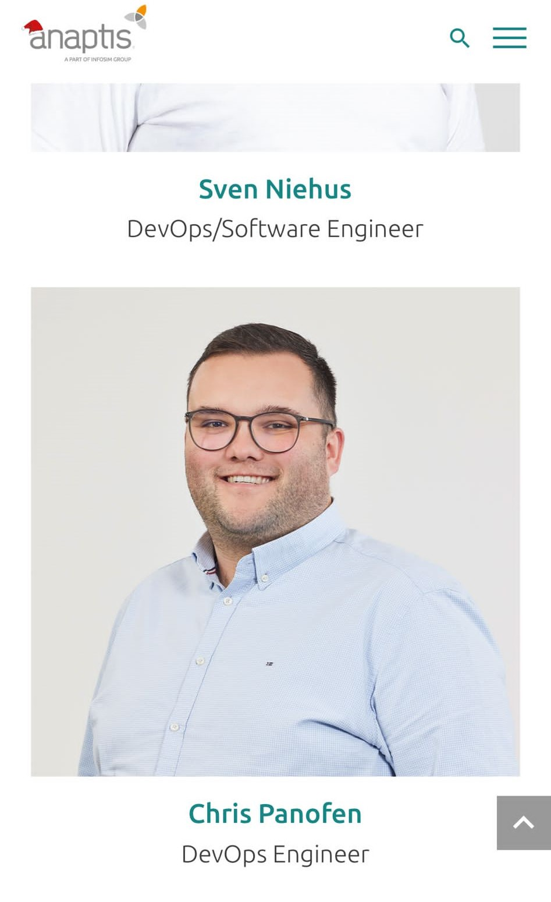
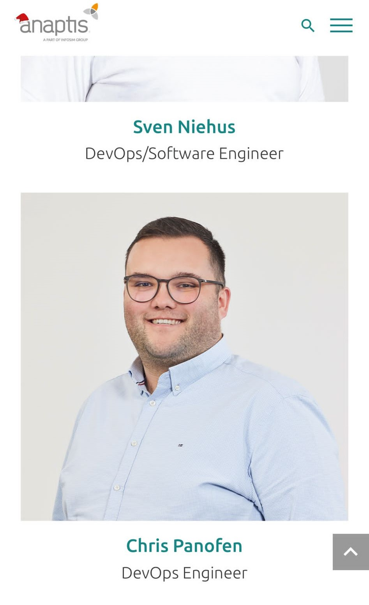
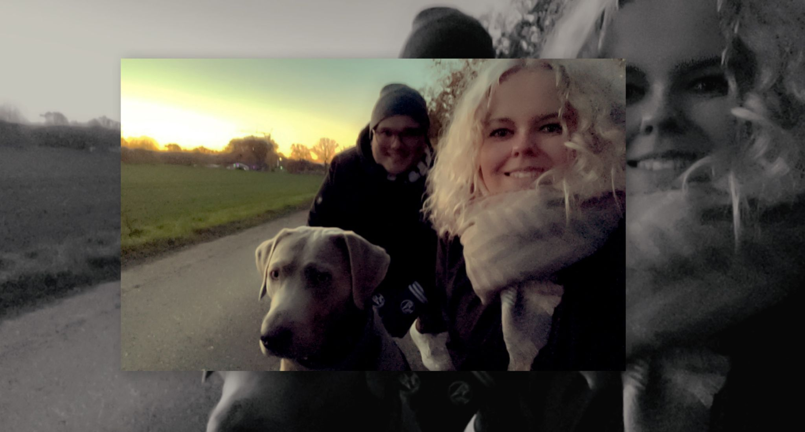
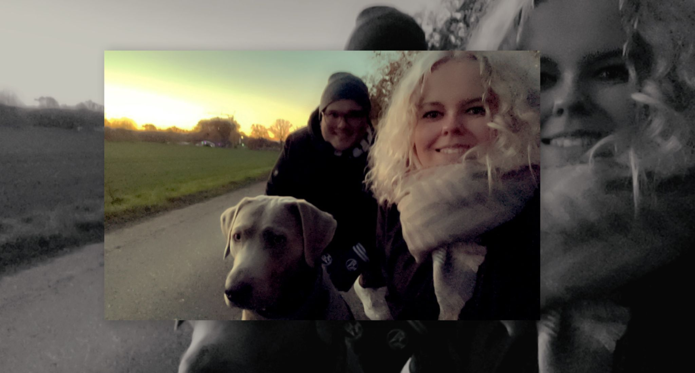
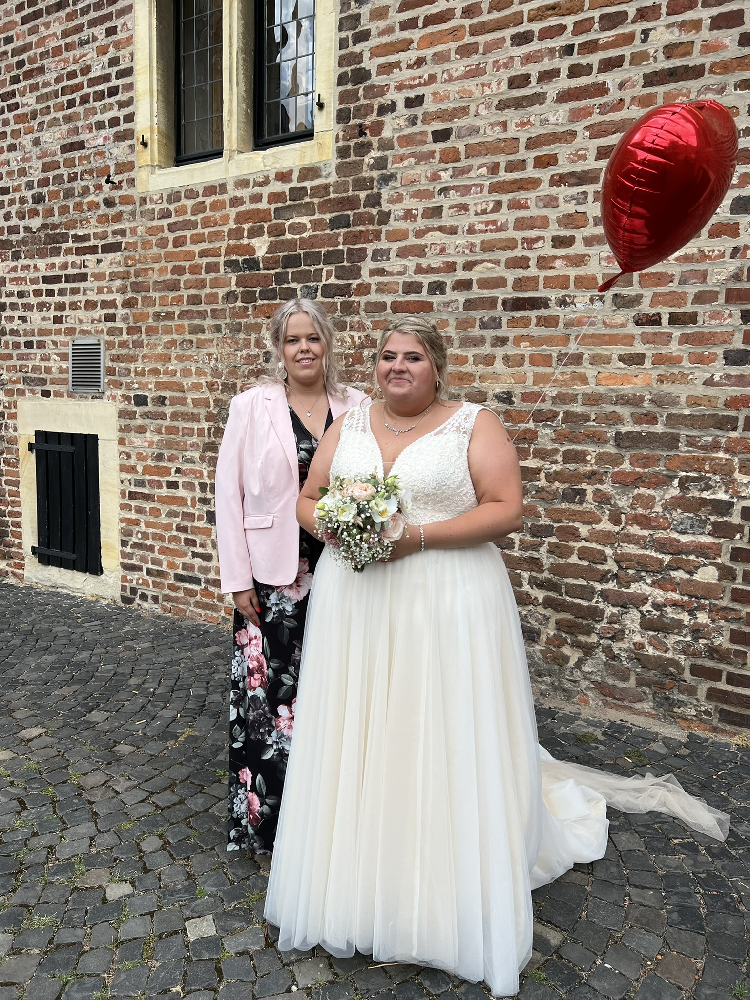
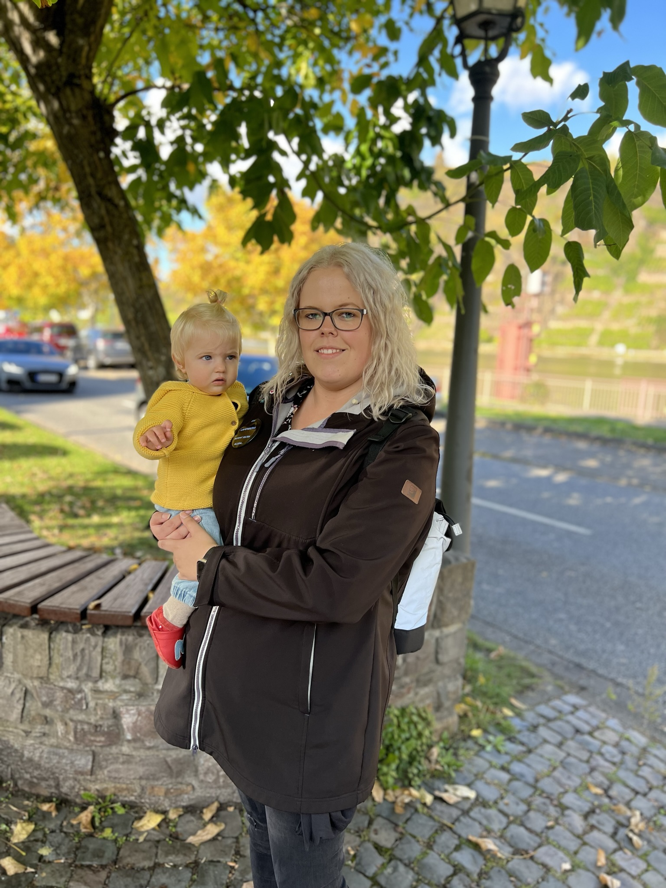
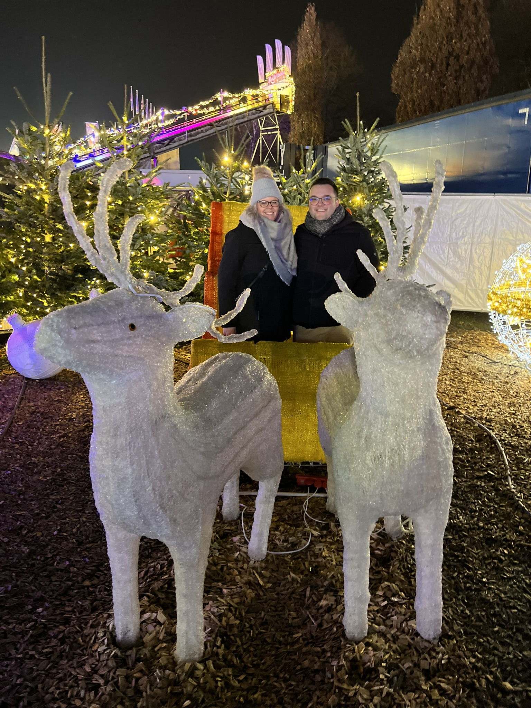
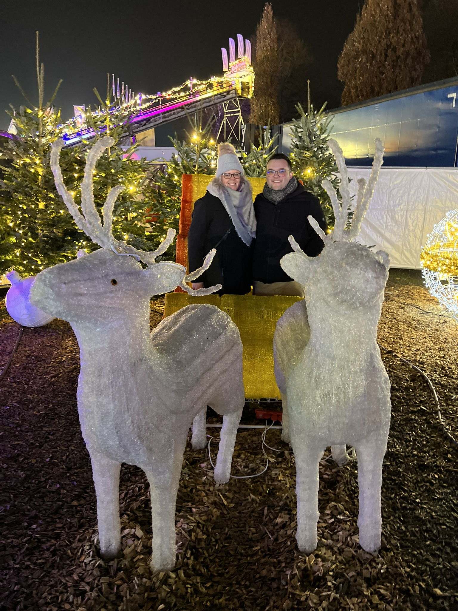
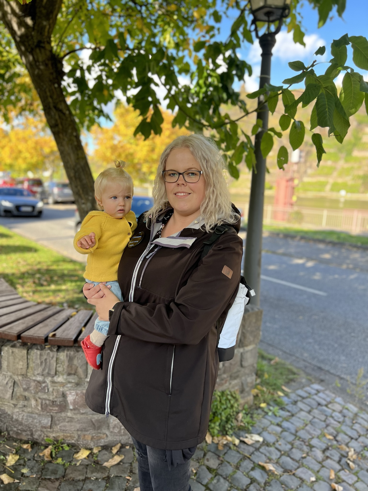
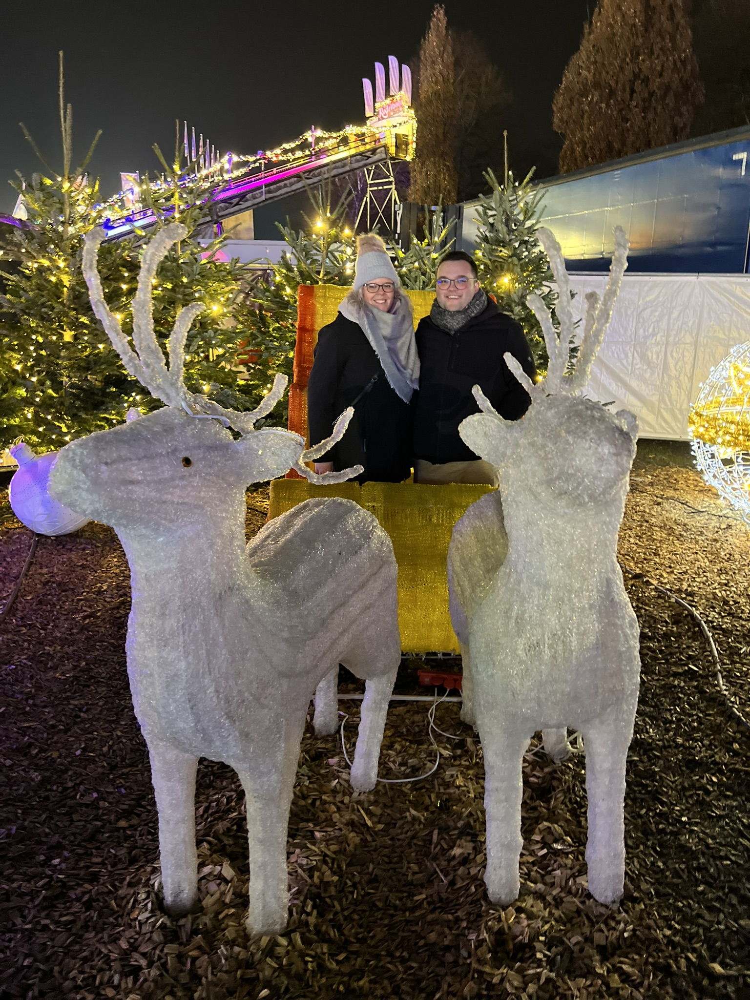

![<h2><br> Alles begann mit einer App.. </br></h2>Ich habe mir nur einen Account bei der App gemacht,
weil ich eine Wette verloren hatte. Allgemein habe ich nicht daran geglaubt, dass man auf einer Online Dating Plattform jemanden
kennenlernen würde der nach was festem sucht und nicht nach was lockerem. „Gib der App eine Chance, es wird Zeit, dass du jemanden
neuen kennenlernst“ hörte ich Marc zähneknirschend sagen als ich mit ihm über die App diskutiert habe. Ich hätte nie gedacht,
dass ich dich auf dieser Plattform kennenlerne, denn manche Chats waren echt komisch und haben mich eigentlich in meinem Glauben bestätigt.
Aber irgendwann Stand auf meinem Display „Saskia hat dir ein like gegeben“ ungläubig entsperrte ich mein Handy und besuchte dein Profil
(ein Glück, dass ich noch Coins hatte). Nach einem Blick auf dein Profil wollte ich dich etwas nähr kennenlernen und matchte dich.
Schon das Schreiben mit dir war anders als mit den anderen davor, denn mit dir habe ich irgendwie sofort ein Thema gefunden.
Man musste dir nichts aus der Nase ziehen und auch keine Angst haben, dass man vielleicht was falsches Fragt
(dennoch war ich glaube ich zu Anfang sehr schüchtern). Zwischenzeitlich hatte ich viel um die Ohren, denn nur ein paar Monate bevor wir uns kennenlernten,
hatte ich die Firma gewechselt und bin für die Firma durch ganz Deutschland gefahren, weswegen ich dir nur sehr wenig und sehr spät zurückgeschrieben habe.
Ich wollte dich aber weiter kennenlernen und wir tauschten unsere Nummern aus. Ein paar Wochen vergingen, im Oktober sollte ich endlich den Mut haben dich zu fragen,
ob du mal mit mir einen Kaffee trinken gehen willst. Am 23 Oktober trafen wir uns zum ersten Mal, wir gingen im Bonfire essen, der Abend war echt schön denn die Zeit verging,
wie im fluge und wir waren verwundert, dass auf einmal die Kellner um uns herum anfingen aufzuräumen und das Restaurant für den Feierabend vorzubereiten.
Schon beim zweiten Date sollte ich Vanessa kennenlernen, ich muss sagen ein bisschen Respekt hatte ich ja schon vor der ersten Begegnung mit ihr denn ich hatte Angst,
dass ich mich wie ein voll Pfosten benehme. Es gab zwar kein Glühwein, und der Klugscheißer Counter hatte seine Geburtsstunde aber im Ribhouse gab es echt verdammt
leckeres Essen. Du schriebst mir noch „Ich habe Nico noch nie so viel reden hören“ das Fand ich total lustig.](.\Bilder\1.jpg)
![<h1>Die Facetime frage... Wilkommen im 21sten Jahrhundert...</h1>
Der 24.03, hätte man mir gesagt, dass das irgendwann mal ein Datum werden wird, welches ich mir merken muss, hätte ich schmunzeln müssen. 2022 musste
ich mir das Datum hinter die Löffel schreiben denn es sollte unser Datum werden. Eigentlich witzig da wir beide im März Geburtstag haben und vorher
noch darüber gelacht haben, dass wir im März von einem Geburtstag auf den anderen stolpern. Durch Corona, Arbeit und anderer Termine hatten wir uns
lange nicht gesehen immer wieder kam es dazu, dass wir unsere Verabredungen canceln mussten. Aber damit konnten wir uns arrangieren und fanden andere
Wege in Kontakt zu bleiben oder uns zu sehen. Wir schrieben jeden Tag und Telefonierten hin und wieder mal. Auch an dem einem Donnerstag, eigentlich
wollten wir uns treffen aber da du länger arbeiten musstest haben wir einfach telefoniert, auch weil ich am nächsten Morgen wieder um 07:00 arbeiten musste.
Es war superlustig und wir dissten uns gegenseitig und guckten zusammen Fernsehen. Irgendwann kamen wir auf deinen Geburtstag zu reden und du fragtest mich
„Als was stell ich dich eigentlich am Samstag vor“. Die Frage wollte ich sowieso eigentlich klären an dem Abend aber nicht per FaceTime, denn damit hatte
ich mich auch vorher schon intensiv beschäftigt und meinen Kopf damit zermartert. „Verdammt ich kann sie doch nicht über Facetime fragen ob sie meine Freundin
werden will“ schrie ich mir in meinem Kopf zu was ich bemerkte gar nicht, dass ich wie gelähmt in die Kamera geschaut habe :D. „Du kannst es dir ja noch überlegen“
hörte ich dich sagen. „Jetzt oder nie“ dachte ich mir und stammelte „Du kannst mich ja als deinen Freund vorstellen, wenn du magst“ stammelte ich. „Was hast du gesagt?“
fragtest du noch, damit habe ich bemerkt, dass das zwar in die richtige Richtung ging es aber nicht das war was du erwartet hattest. Auf einmal hatte ich das Lied
„Kinder der 90 er“ von Kult im Kopf. „Okay dann frage ich offiziell, Willst du mit mir gehen? Ja, Nein, Vielleicht“ das war der Moment, in dem mein Plus nicht mehr normal war
und was man in der medizinischen Fachsprache unter Tachykardie versteht (kein Witz !! habe nachher noch auf meiner Uhr nachgeschaut). „Was denkst denn du?“ kam von dir mit
einem breiten lächeln zurück „Ich nehme mal an, das heißt Ja also sind wir zusammen?“ fragte ich noch mal nach.
An deinem Geburtstag habe ich deine Familie kennengelernt, ich war so krass nervös und hatte Angst mich wie ein dulli zu verhalten. Aber ich wurde herzlich empfangen und
dein Geburtstag war echt ein schöner Abend leider musste ich am nächsten Tag noch arbeiten sonst wäre ich noch länger geblieben. Das ist aufjedenfall unser erstes Bild
zusammen, auch wenn du es nicht schön findest ist es etwas besonderes.](.\Bilder\Erstes Bild.jpeg) >
>
![<h2><br>Unser erster gemeinsamer Urlaub…</br></h2>
Bevor wir zusammen waren, haben wir über Urlaub gesprochen und wie dringend wir beide ihn doch eigentlich gebrauchen könnten.
Ich hatte bis zu diesem Zeitpunkt fast 1,5 Jahre keinen richtigen Urlaub gemacht, was ich auch bemerkte.
Aber mein Job Wechsel hat es mir irgendwie nicht erlaubt auch nur richtig daran zu denken. Ich weiß noch wie schockiert du warst als ich dir gesagt habe,
dass ich Willingen nicht kannte, „Dann hast du den schönsten Fleck im Sauerland verpasst“ antwortest du. Naja, was soll ich sagen,
vielleicht hätte Willingen schon ehr auf meiner Karte stehen sollen. Du fragtest mich was ich an Ostern so vor habe und ob ich nicht vielleicht
Lust hätte mit dir auf einen Kurzurlaub nach Willingen zu fahren. Naja was soll ich sagen. vielleicht hätte Willingen schon etwas ehr auf meiner Karte stehen sollen.](.\Bilder\Willingen Saskia und Chris.jpeg) Neuer Job alter Chris - Anaptis
Neuer Job alter Chris - AnaptisEhrlich gesagt habe ich nie vor einem Jobwechsel soviel Angst gehabt wie vor diesen, wie damals als ich dich angeschrieben habe bin ich da mit der Einstellung rein gegangen 'Was soll schon passieren?' beim ersten Gespräch mit Doro habe ich mir nicht ausgemalt dass ich bei dem orangenen N in den Sack hauen werde und eine so hohe Position annehmen werde. Eigentlich war der start bei der Netgo viel zu gut, denn nur nach einem halbem Jahr wurde ich zweimal befördert einmal offiziell und einmal inoffiziell. Es war echt zu schön um wahr zu sein aber oft hat man mich hingehalten und auch verarscht. Wenn alle Versprechen gehalten worden wären, hätte ich einen schicken Firmenwagen gehabt, einen Werkzeugkasten und viele andere Goodies aber nichts davon ist wahr geworden. Ehrlich gesagt wollte ich nie Aufgeben doch der inoffizielle Teamleiter hat mir fast mein Feuer genommen welches ich zu Anfang hatte als ich dort angekommen war. Das meine Beförderung das Anfang von Ende sein sollte hätte ich nie gedacht, beinahe wäre es auch das Ende unserer Geschichte gewesen da ich immer mehr in mich eingekehrt war und nur noch darüber nachgedacht habe was mich am nächsten Morgen auf der Arbeit erwartet. Als wir über uns gesprochen haben ist mir erst mal klar geworden dass der Job mich persöhnlich weitergebracht hat und dass ich auf der Arbeit zwar einen guten Status habe, er mich aber Privat behindert. Dannach habe ich nachgedacht und es war mir mehr als ernst, dennoch habe ich echt viel darüber nachgedacht da Ich diesen Status aufgebe und dass ich meine Festanstellung aufgebe. Ich habe echt darüber nachgedacht ob ich das wirklich tun werde, denn meine Ausbildung in der Softwareentwicklung war echt der Horror und hat mich schon einmal zum Psychologen geschickt (auch andere Umstände). Mein erstes Gespräch mit Doro war echt gut, dennoch hat es mich nicht von den Socken gehauen aber ich durfte Anaptis kennenlernen was mein Gefühl verbessert hat. Dennoch wollte ich nicht wechseln da ich immer noch meine Ausbildung im Kopf hatte die echt Narben hinterlassen hat, aber Markus und Markus blieben echt hartnäckig. Nach ein paar Nein wurde das Angebot aber so hoch gepockert dass ich mir schlecht geworden ist und ich schließlich mit dir darüber geredet habe weil ich einfach mal eine zweite Meinung haben wollte. Als du mich gefragt hast ob ich bei dem Angebot wirklich noch nachdenke und nach dem Marc, Mama , Papa, Doro auch mich noch bearbeitet haben ging ich in die Verhandlung. Auch dannach habe ich noch nachgedacht, aber mir dir zusammen habe ich den Vertrag unterschrieben ich weiß noch dass du meintest dass man mich immer zu meinem Glück zwingen muss und ich denke du hast recht denn dass ist wirklich so. Erst nach dem ich die Kündigung eingereicht habe viel mir ein Stein vom Herzen aber der Kampf sollte erst losgehen. Die Scheißegal Haltung hat mir geholfen, denn so konnte ich auf der Arbeit einfach ein kaltes Arschloch sein. Aber es sollte alles wieder gut werden und so fing ich am 01.12 um 10:00 bein Anaptis an. Ja was soll ich sagen, seitdem bin ich wieder entspannt und die Firma und der Job sind einfach toll.
Ich habe damit gezögert weil ich uns nicht noch mehr belasten wollte, denn du bist mir echt wichtig. Es tut mir Leid dass ich dich damit auch noch sehr belastet habe. Das wollte ich nicht, ich hasse mich immer noch dafür dass ich es soweit hab kommen lassen. Danke dass du mich immer Stark machst und für mich immer da bist ! Ich liebe dich <3
Desweiteren habe ich echt Respekt vor dem Job gehabt und mich noch nicht gut genug für den Job gefühlt, weil es auch mehr Verantwortung ist und ich Angst hatte dass ich sang und klanglos versagen werde, dass du da warst hat mich echt Stark gemacht.
Jeder Mann braucht eine Frau, wenn sein Leben so richtig schwierig ist. Es ist wie bei einem Schachspiel die Königen beschützt den König - Bodo Schäfer
Dieses Zitat habe ich nie Verstanden bis es zu diesem Punkt gekommen ist, denn hätte ich dich nicht gehabt hätte ich den Kampf nicht gewonnen und wäre echt verunsichert gewesen">
![<h2><br>Carmen und Dustin sagen Ja <3
</br></h2>Grade Frisch zusammen, schon stand die erste Hochzeit an. Carmen und Dustin gaben sich am 11.06.2021 das Ja Wort.
Ich war echt perplex, dass ich auch noch eingeladen worden bin, da hatte ich echt nicht mitgerechnet. Also ging es mit dir auf die zweite Hochzeit,
die ich je in meinem Leben mit gemacht habe, ich war supernervös, weil Mama und Papa mit mir vorher noch einen Crashkurs gemacht haben, wie man sich
auf einer Hochzeit verhält oder auch „Wie benehme ich mich nicht wie ein kompletter Vollidiot auf einer Hochzeit“. Und mir war dann erstmal klar, dass
es super viel zu beachten gab. Vorher gab es noch eine Meisteraufgabe zu bewältigen „Etwas Passendes zum Anziehen finden“.Als du mir gesagt hattest, dass
ich auch eingeladen bin, begann mein Kopf mit der Suche für das Richtige aus. Ziel war es schick neben dir aus zu sehen. Also fuhr ich in diverse Shopping Centren
(Bocholt, Borken,Oberhausen, Münster) und ich durchforstete die Untiefen der Onlineshops (Zalando, About You, Shein, Boohoo Men etc.) Als ich mein Outfit zusammen hatte,
stand dann auch schon die Hochzeit der beiden vor der Tür ich war mega gespannt, was du sagen wirst. Als ich an dem Tag zu dir gefahren war, hatte ich megagute Laune und i
ch war mega gespannt, wie du aussehen wirst. Als du die Tür aufgemachtest war ich überwältigt, denn du sahst echt gut aus. Aber du warst unzufrieden mit deinen Haaren aber ich fand
dich trotzdem hübsch. Auf der Fahrt zur Hochzeit hast du mir noch erzählt wie du Carmen und Dustin kennengelernt hast. Die Hochzeit war echt schön, auch die
Truppe mit denen wir da zusammen feiern durften, war einfach sehr cool.Vorallem mit den Männern viel Blödsinn zumachen war echt cool und hat echt Spaß gemacht.
Johannes und Ferry sind mir an dem Abend im Gedächtnis geblieben. Am nächsten Tag holten wir den Schlaf nach den wir verpasst hatten.](.\Bilder\Carmen und Dustins Hochzeit.jpeg)
![<h2><br> Maurice und Sylvanas Hochzeit <3 </br></h2>
Maurice und Sylvanas Hochzeit, wow, das war echt ein cooler Abend. Einfach alles war perfekt, die Stimmung, und der DJ wusste, was er da tut.
Meiner Meinung nach eine gelungene Hochzeit, ich habe auch noch nie solange getanzt. An dem Abend nahmen Maik und Mark mich mit an die Theke zum Saufen.
Ein paar Gin Tonic und Kornbrause weiter mussten die ersten sich zum Schlafen ins Auto legen. Es war auch der Abend, an dem wir das erste Mal im Fliederbusch eingecheckt haben.
Das Zimmer war eigentlich total in Ordnung bis auf die Tür zum Badezimmer, die ein bisschen doof gewählt war. Denn wenn man im kleinem Badezimmer sich bewegt hat, stand man praktisch
auf dem präsentier Teller. Ich kann es immer noch hören, wie du dich über die Tür beschwert hast Ein Tropfen auf den heißen Stein war, als Tanja zu dir meinte:
So lernt man sich kennen, ich weiß noch, wie du geschimpft hast. Ich selber hatte da ehr weniger ein Problem mit, nur wenn ich auf dem Klo gesessen habe,
ist mir etwas unwohl geworden, weil ich über das Zimmer aus dem Fenster schauen konnte. An dem Abend habe ich mich auch noch mit meinen Arbeitskollegen unterhalten,
Andi hat an dem Abend auch noch ein paar Bier springen lassen. Auch nach der Hochzeit haben wir den nächsten Tag damit verbracht, schlaf nachzuholen.
Ich fand es megacool deine Familie noch besser kennenleren zu können, schon an dem Abend habe ich mich wie ein Teil deiner Familie gefühlt. Das hat mich echt überwältigt](.\Bilder\Silvana und Maurice.jpeg)
![<h2><br> Mal so zwischendrin.... <3 </br></h2> Jetzt, zu dem Zeitpunkt, an dem ich die Updates für die Seite geschrieben habe, sind wir ein halbes Jahr zusammen, um genau zu sein 200 Tage. Als ich damals auf Lovoo unterwegs war, wollte ich eigentlich keine neue Beziehung, da so viele Veränderungen bei mir anstanden (neuer Job, Wohnungssuche, etc) und erst mal schauen, wie das ganze so anläuft. Aber als ich dein Profil so durchgestöbert habe und das Bild von dir und dem Gipfelkreuz gesehen habe, wollte ich dich kennenlernen. Ich weiß noch, dass ich zu Marc meinte, dass ich mit dir noch schreibe und ansonsten die App löschen werde. Nun ja, die letzte Chance für die App war aber auch ein voller Erfolg und ich würde dich immer wieder anschreiben. Du hast recht, dass wir auch ein Buch schreiben könnten, denn das, was wir haben, ist schon etwas besonderes so als hätte sich Hollywood das ganze ausgedacht. Als du mir die Sprachmemo geschickt hast, habe ich mir das ganze auch mal durch den Kopf gehen lassen. Es ist wirklich crazy, dass wir uns bei dem erstem Date wie in eine Art blase befunden haben und alles um uns vergessen haben dass wir kurz nach dem wir zusammen gekommen sind und uns noch nicht so gut kannten, einfach unsere Sachen gepackt haben und in den Urlaub gefahren sind, dass wir schon auf 3 Hochzeiten getanzt haben und dass das zweite Date mit Wanne und Nico war und der Abend echt schön war. Dass wir über FaceTime zusammen gekommen sind, das ist alles anders, aber ich liebe, dass wir anders sind. Und dass unsere Geschichte anders als bei anderen ist. <br> <br>
Ich muss sagen, dass ich Marc dankbar bin, dass er mir die App aufgezwungen hat, da ich dich sonst nie hätte kennenlernen dürfen. Wirklich ! <br><br>
Ich möchte auch dir einfach danke sagen, danke das du für mich da bist. Danke, dass ich bei dir so ein kann, wie ich bin und dass du mich so nimmst wie ich bin. Danke, dass du mir zu hörst, auch wenn ich dir ein Kotlett ans Ohr brabbel und dir selbst Kleinigkeiten merkst. Ich befürchte immer das ich das nicht so zeigen kann wie ich es sollte, das ist der Grund, dass ich die Seite programmiert habe und auch die eine Box gemacht habe. Nicht weil ich dich übertreffen will oder so, sondern einfach, weil ich glaube, dass ich dir das so am besten zeigen kann. Ich kann mich am besten so aus drücken.
Ich möchte, dass du weißt, dass ich dich immer bei allem Unterstützen werde. Ich liebe dich ! <br><br>
Ich liebe dich mit all deinen Ecken und Kanten und würde niemals etwas daran ändern, denn genau das macht dich zu der Person, die ich liebe. Ich finde es echt süß, wenn du mit dir selber kämpfst, nicht einzuschlafen, wenn wir auf der Couch sitzen. Ich finde es lustig, dass du im Schlaf sprichst und ich mag es, dass du mich disst. (Auch, wenn ich manchmal Schwierigkeiten habe, dass zu interpretieren.)
<br> <br>
Eins will ich noch los werden, mach dir niemals Gedanken, ob ich kuscheln möchte oder nicht. Du kannst dich immer in meinen Arm schmeißen, sollte ich doof sitzen, kannst du mich auch ruhig anmaulen, dass du kuscheln möchtest :)](.\Bilder\letter.jpg) 
Die einfachen Dinge....
Die schönste Zeit im Leben sind die kleinen Momente in denen du spürst, du bist zur richtigen Zeit, am richtigen Ort
Egal ob es mit Coby oder Lilli spazieren gehen ist, Familientreffen, treffen mit Freunden, mit dir zu Chris Tall, Luke Mokridge und Oliver Pocher fahren, einfach essen gehen oder auch einfaches Fernseh gucken mit kuscheln ist sind es diese Momente die an denen ich zum richtigen Zeitpunkt am Richtigen Ort bin. Auch diese Momente sind einfach wunderschön denn die zweisamkeit mit dir ist einfach toll, denn für mich ist es wie eine kurze Pause von all dem Stress den der Alltag so mit sich bringt. Weißt du noch als es so warm war und wir uns in Raesfeld am Schloss getroffen haben? Der Tag war so als wären wir im Urlaub gewesen, der Tag war auch super schön. Ich vermisse dich irgendwie jeden Tag, denn ohne dich ist die Wohnung so ruhig und meine Couch und mein Bett so leer. Facetime und WhatsApp sind nur ein kleines Trostpflaster, am schönsten ist es wenn du in meinem Arm liegst. ">
Mr und Mrs Nawrotski
Hochzeit 3 von 4 stand an, Wanne und Nico sollten sich am Schloss Raesfeld das Ja Wort geben. Ganz ehrlich, bevor ich dich kennengelernt habe,
war ich genau auf einer Hochzeit und dass war die von meinem Klassenlehrer auf der Realschule… in der 7ten Klasse. Danach war ich nie auf irgendeine Hochzeit eingeladen,
selbst die von Björn und Sabrina habe ich nicht mitbekommen, da die beiden in der Corona das Ja Wort gegeben haben und ich keinen Urlaub bekommen habe damals.
Vorher waren wir mit den beiden noch Essen ich weiß noch ganz genau als du mich leicht geschockt angeschaut hast und meintest „Vanessa ist bald verheiratet, krass“. An dem Tag kamst du ein wenig sentimental rüber, aber ich denke, dass es mir nicht anders gehen wird, wenn Marc heiratet. Nach der Trauung ging es vom Schloss Raesfeld ins Hotel Fliederbusch. Beim Einchecken kamen mir wieder ein paar Flashbacks zum letzten Mal, denn es gab denselben Rechtschreibfehler und viele merkwürdiger war, dass wir wieder das Zimmer 24 bekommen hast. Ich habe es noch vor Augen, wie du mich angeschaut hast als, dir der Rezeptionist die Schlüssel für das Zimmer gegeben haben. An dem Abend bin ich schon etwas ehr hoch, als ich oben war habe ich noch kurz mit dem Gladbacher telefoniert. Ich war so fertig, dass ich fast im Anzug eingeschlafen bin, gut dass du in dem Moment hochgekommen bist. Als wir dann beide im Bett lagen, waren wir uns einig, dass die Hochzeit zwar gut war aber, nicht an die Maurice und Sylvana rangekommen ist (Falls du das Lesen solltest Wanne an dieser Stelle ein dickes Sorry!) ">  Die Mosel
Ich bin jetzt 25 Jahre alt und bis zu dem Zeitpunkt war ich in London, Berlin, Barcelona, Venedig, Verona, Antalya, Strasbourg, Klagenfurt, Graz, Winterberg, Antalya. Wie man sieht, ich habe einiges von der Welt gesehen, aber nur sehr wenig von Deutschland. Aber diesmal sollte es nicht ins Ausland gehen, sondern an die Mosel mit deiner Familie. Das war ein Termin, den du mir schon sehr früh mitgeteilt hattest und zum Glück war der Urlaub schon seit einem halben Jahr durch (zum Glück!!)
Ich hatte schon oft gehört, dass die Mosel sehr schön sollte, um so cooler fand ich, das sie jetzt auch mal live und in Farbe sehen sollte. Ehrlich gesagt war ich am Abend vorher echt aufgeregt und ich habe kaum geschlafen, denn mir wurde bewusst, dass ich in den Tagen sehr viel Zeit mit deiner Familie verbringen werde und alle noch besser kennenlernen werde. Ich weiß nicht warum, aber ich hatte ein wenig Angst, mich wie ein Depp zu verhalten, aber ich hatte richtig Lust auf die Fahrt, da es für mich der erste richtige längere Urlaub sein sollte und viel wichtiger es war der zweite Urlaub mit dir. Am Morgen ging es schon sehr Früh los, wir sind es aber ganz entspannt angegangen. Wir sind aufgestanden, haben gefrühstückt und uns fertiggemacht. Beim Packen gab es dann für alle die Ein Lammering kommt selten allein Buttons, ich fand es cool, dass ich auch einen bekommen habe, da nicht damit gerechnet habe, dass ich einen bekomme.
An dieser Stelle möchte ich auch noch mal sagen, dass ich es echt schön finde, dass ich bei euch so herzlich aufgenommen wurde. Ich habe irgendwie nie das Gefühl gehabt, dass ich nur der Anhang bin. Das ist nicht selbstverständlich und so habe ich das auch noch nicht erlebt. Vielen Dank an deine ganze Familie, denn das bedeutet mir sehr viel! Ich hoffe dass ich das nur Ansatzweise zurückgeben kann.
Nach und nach trudelten alle ein und der Konvoi setzte sich Richtung Mosel in Bewegung. Vorallem im Bus wurde es feucht fröhlich, denn in den Lunchboxen von Sylvana waren Süßigkeiten und ein Bier. Ich bekenne mich dafür schuldig, dass ich der erste im Bus war, der sein Bier aufgerissen hat (Aber hey!! im Urlaub ist fast alles erlaubt). Die Stimmung im Bus war sehr gut, lustig war das Lied Sexualverkehr von Christian Steiffen (dem Mann mit der richtig guten Stimme), denn dies hat bei den Älteren im Bus für richtig Stimmung gesorgt. Dein Blick, als ich das Lied dann auch noch kannte, war unbezahlbar :D. Bei der Frühstückspause waren wir uns uneinig, an welcher Raststätte die machen sollten, da die erste wie eine Toilette gerochen hatte (Der Bus nach der Rast auch). Angekommen haben wir erstmal unser Zimmer bezogen nach dem wir ein großes Zimmer bekommen haben tauschten wir es mit Tanja und Mark, da die beiden noch Thores Bett aufstellen mussten. Unser Zimmer war wirklich klein und ich habe am Abend auch sofort mit meinem kleinem Zeh alle Kanten gefunden. Allgemein war die Stimmung wie auf einer Klassenfahrt und das hat das Ganze noch mal besonders lustig gemacht. Nach dem Einchecken ging es direkt los zur Burg von Metterlich, der Aussicht von da oben war echt der Wahnsinn vorallem von dem Burgturm war es einfach toll. Das Wetter war einfach toll an dem Tag. Am Abend waren wir beide fertig, sodass wir uns entschieden haben, dass wir nach dem Essen aufs Zimmer zu gehen. Der Abend war schön, da wir das erste Mal an diesem Tag einfach mal nur zu zweit waren. Am nächsten Morgen ging es zur riesen Hängebrücke, die fand ich megaspannend, aber das drüber laufen war echt ein Abenteuer. Danach war ich echt ein wenig Seekrank aber es war cool. Danach ging es zur Weinprobe, ich muss ganz ehrlich sagen, dass ich noch nie so einen im Tee hatte wie nach der Weinprobe vorallem weil ich zwischenzeitlich für zwei getrunken habe. Bei der Weinprobe wollte Thore das erste mal auf meinem Arm, ich glaube, dass wir da Freunde geworden sind. An dem Tag haben auch die Zecken und die Bauern gespielt, ich fand es witzig, dass alle Männer vor dem Abendessen Fußball geschaut haben. Am nächsten Morgen sind wir noch zu einem Aussichtspunkt gefahren, was auch ganz schön war. Irgendwie hatte ich an dem Tag so ein bisschen das Gefühl, dass ich dir voll auf die Nerven gehe: D Aber die Rückfahrt sollte mich eines Besseren belehren, denn Ela musste echt oft aufs Klo :D Im Großem und Ganzem fand ich die Tage echt schön und freue mich, dass es im März wieder in die Richtung geht:) ">![<h2> Willingen die zweite </h2> <br>
Nach der Mosel ging es für uns beide nach Willingen, ich glaube das ist auch bei mir der spontanste Urlaub den ich je gebucht habe. Irgendwie haben wir beide erst ein paar Tage
nach der Buchung realisiert dass wir wirklich ein paar Tage wegfahren. Es war einer der schönsten Urlaube die ich bis jetzt verbracht habe und ich glaube dass dieser Urlaub unsere
Beziehung gefestigt hat. Die paar Tage nur du und ich, außerhalb des Alltagstresses habe ich echt genossen und ich würde immer wieder mit dir nach Wilingen fahren. Nach dem wir
ander Mosel sehr viel Action hatten haben wir in Willingen alles auf Entspannung gesetzt, wir sind morgens ganz gemütlich losgefahren und sind auch auf der Autobahn sehr gut
durch gekommen. Als wir angekommen sind konnten wir noch nicht ins Haus also sind wir erst was essen gegangen und haben dann am Gipfelkreuz erst die Ruhe genossen und dann
ein Fotoshooting gemacht. Nach dem Einkaufen konnten wir dann endlich ins Haus und ich muss sagen das Haus war echt der Wahnsinn, danach haben wir ganz gemütlich auf der Terasse
die Sonne genossen und gemütlich ein Bier getrunken. Das Bier hat echt gut getan, denn ich habe sofort gemerkt dass ich mal wieder richtig Runterfahre und zur Ruhe komme. Leider
war das Wetter an den Restlichen Tagen nicht so pralle, aber wir haben das beste gemacht. Ein Highlight war der Astenkick, das fliegen wie Peter Pan war einfach echt cool. Die Restlichen
Tage haben wir einfach nur gechillt, der Filmeabend war auch echt toll. Schön war dass wir keinen Druck hatten dass einer von uns am nächsten Tag wieder raus musste. Am Freitag ging es
dir nicht gut, und du hast dich hingelegt. Als du eingeschlafen warst wollte ich dich nicht wecken und ich wollte in der nähe bleiben für den Fall dass du was brauchst. Also habe ich Notruf
Harfenkante einmal durchgesuchtet (echt geile Serie :D) Deine Mama hat sich bei mir Erkundigt wie es dir geht und ich habe ihr geschrieben dass du dich hingelegt hast und ich Falls
du etwas brauchen solltest noch zur Apotheke fahren werde. Ich fand dein Gesicht witzig als du meintest dass du Brötchen holen soll und ich dir einfach gesagt habe dass du auch mein Auto
nehmen kannst, aber Neuwagen hin oder her und auch wenn du Mokki kaputt gefahren hättest wäre mir viel wichtiger gewesen dass du ohne Narben daraus gekommen wärst denn das Auto kann man
ersetzen dich nicht. Der Urlaub war mega schön, vorallem hat er mir gezeigt als du meintest dass du den Chris wieder hast denn du kennengelernt hast wie sehr mich die Netgo verbrennt
und dass ich meine Kündigung durchdrücken sollte egal wie gut das Gegenangebot auch sein sollte.](./Bilder/Willingen2.jpeg)  Die Weihnachtsmärkte/ Weihnachten
 Die Weihnachtsmärkte/ Weihnachten
Ehrlich gesagt war ich in den letzen Jahren an Weihnachten nie im Stimmung und ich fand Weihnachten echt doof. Ich konnte mich echt mit dem Grinch identifiziern, am schlimsten war das Weihnachten in Corona. Aber dieses Jahr war es anders, denn es war unser erstes gemeinsames Weihnachten worauf ich mich echt gefreut habe. So richtig in Weihnachtsstimmung haben mich die Weihnachtsmärkte gebracht, alle waren schön aber am schönsten war die Winterkirmes in Crange mit Wanne und Nico. Denn so einen Weihnachtsmarkt habe ich noch nie gesehen, auch die Stimmung war einfach toll. ">
Vorher waren wir mit den beiden noch Essen ich weiß noch ganz genau als du mich leicht geschockt angeschaut hast und meintest „Vanessa ist bald verheiratet, krass“. An dem Tag kamst du ein wenig sentimental rüber, aber ich denke, dass es mir nicht anders gehen wird, wenn Marc heiratet. Nach der Trauung ging es vom Schloss Raesfeld ins Hotel Fliederbusch. Beim Einchecken kamen mir wieder ein paar Flashbacks zum letzten Mal, denn es gab denselben Rechtschreibfehler und viele merkwürdiger war, dass wir wieder das Zimmer 24 bekommen hast. Ich habe es noch vor Augen, wie du mich angeschaut hast als, dir der Rezeptionist die Schlüssel für das Zimmer gegeben haben. An dem Abend bin ich schon etwas ehr hoch, als ich oben war habe ich noch kurz mit dem Gladbacher telefoniert. Ich war so fertig, dass ich fast im Anzug eingeschlafen bin, gut dass du in dem Moment hochgekommen bist. Als wir dann beide im Bett lagen, waren wir uns einig, dass die Hochzeit zwar gut war aber, nicht an die Maurice und Sylvana rangekommen ist (Falls du das Lesen solltest Wanne an dieser Stelle ein dickes Sorry!) ">  Die Mosel
Ich bin jetzt 25 Jahre alt und bis zu dem Zeitpunkt war ich in London, Berlin, Barcelona, Venedig, Verona, Antalya, Strasbourg, Klagenfurt, Graz, Winterberg, Antalya. Wie man sieht, ich habe einiges von der Welt gesehen, aber nur sehr wenig von Deutschland. Aber diesmal sollte es nicht ins Ausland gehen, sondern an die Mosel mit deiner Familie. Das war ein Termin, den du mir schon sehr früh mitgeteilt hattest und zum Glück war der Urlaub schon seit einem halben Jahr durch (zum Glück!!)
Ich hatte schon oft gehört, dass die Mosel sehr schön sollte, um so cooler fand ich, das sie jetzt auch mal live und in Farbe sehen sollte. Ehrlich gesagt war ich am Abend vorher echt aufgeregt und ich habe kaum geschlafen, denn mir wurde bewusst, dass ich in den Tagen sehr viel Zeit mit deiner Familie verbringen werde und alle noch besser kennenlernen werde. Ich weiß nicht warum, aber ich hatte ein wenig Angst, mich wie ein Depp zu verhalten, aber ich hatte richtig Lust auf die Fahrt, da es für mich der erste richtige längere Urlaub sein sollte und viel wichtiger es war der zweite Urlaub mit dir. Am Morgen ging es schon sehr Früh los, wir sind es aber ganz entspannt angegangen. Wir sind aufgestanden, haben gefrühstückt und uns fertiggemacht. Beim Packen gab es dann für alle die Ein Lammering kommt selten allein Buttons, ich fand es cool, dass ich auch einen bekommen habe, da nicht damit gerechnet habe, dass ich einen bekomme.
An dieser Stelle möchte ich auch noch mal sagen, dass ich es echt schön finde, dass ich bei euch so herzlich aufgenommen wurde. Ich habe irgendwie nie das Gefühl gehabt, dass ich nur der Anhang bin. Das ist nicht selbstverständlich und so habe ich das auch noch nicht erlebt. Vielen Dank an deine ganze Familie, denn das bedeutet mir sehr viel! Ich hoffe dass ich das nur Ansatzweise zurückgeben kann.
Nach und nach trudelten alle ein und der Konvoi setzte sich Richtung Mosel in Bewegung. Vorallem im Bus wurde es feucht fröhlich, denn in den Lunchboxen von Sylvana waren Süßigkeiten und ein Bier. Ich bekenne mich dafür schuldig, dass ich der erste im Bus war, der sein Bier aufgerissen hat (Aber hey!! im Urlaub ist fast alles erlaubt). Die Stimmung im Bus war sehr gut, lustig war das Lied Sexualverkehr von Christian Steiffen (dem Mann mit der richtig guten Stimme), denn dies hat bei den Älteren im Bus für richtig Stimmung gesorgt. Dein Blick, als ich das Lied dann auch noch kannte, war unbezahlbar :D. Bei der Frühstückspause waren wir uns uneinig, an welcher Raststätte die machen sollten, da die erste wie eine Toilette gerochen hatte (Der Bus nach der Rast auch). Angekommen haben wir erstmal unser Zimmer bezogen nach dem wir ein großes Zimmer bekommen haben tauschten wir es mit Tanja und Mark, da die beiden noch Thores Bett aufstellen mussten. Unser Zimmer war wirklich klein und ich habe am Abend auch sofort mit meinem kleinem Zeh alle Kanten gefunden. Allgemein war die Stimmung wie auf einer Klassenfahrt und das hat das Ganze noch mal besonders lustig gemacht. Nach dem Einchecken ging es direkt los zur Burg von Metterlich, der Aussicht von da oben war echt der Wahnsinn vorallem von dem Burgturm war es einfach toll. Das Wetter war einfach toll an dem Tag. Am Abend waren wir beide fertig, sodass wir uns entschieden haben, dass wir nach dem Essen aufs Zimmer zu gehen. Der Abend war schön, da wir das erste Mal an diesem Tag einfach mal nur zu zweit waren. Am nächsten Morgen ging es zur riesen Hängebrücke, die fand ich megaspannend, aber das drüber laufen war echt ein Abenteuer. Danach war ich echt ein wenig Seekrank aber es war cool. Danach ging es zur Weinprobe, ich muss ganz ehrlich sagen, dass ich noch nie so einen im Tee hatte wie nach der Weinprobe vorallem weil ich zwischenzeitlich für zwei getrunken habe. Bei der Weinprobe wollte Thore das erste mal auf meinem Arm, ich glaube, dass wir da Freunde geworden sind. An dem Tag haben auch die Zecken und die Bauern gespielt, ich fand es witzig, dass alle Männer vor dem Abendessen Fußball geschaut haben. Am nächsten Morgen sind wir noch zu einem Aussichtspunkt gefahren, was auch ganz schön war. Irgendwie hatte ich an dem Tag so ein bisschen das Gefühl, dass ich dir voll auf die Nerven gehe: D Aber die Rückfahrt sollte mich eines Besseren belehren, denn Ela musste echt oft aufs Klo :D Im Großem und Ganzem fand ich die Tage echt schön und freue mich, dass es im März wieder in die Richtung geht:) ">
 Die Weihnachtsmärkte/ Weihnachten Ehrlich gesagt war ich in den letzen Jahren an Weihnachten nie im Stimmung und ich fand Weihnachten echt doof. Ich konnte mich echt mit dem Grinch identifiziern, am schlimsten war das Weihnachten in Corona. Aber dieses Jahr war es anders, denn es war unser erstes gemeinsames Weihnachten worauf ich mich echt gefreut habe. So richtig in Weihnachtsstimmung haben mich die Weihnachtsmärkte gebracht, alle waren schön aber am schönsten war die Winterkirmes in Crange mit Wanne und Nico. Denn so einen Weihnachtsmarkt habe ich noch nie gesehen, auch die Stimmung war einfach toll. ">